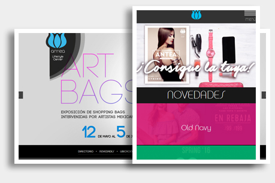

Maquetación del Nuevo Portal SAT y Buzón Tributario

¿En qué consiste la maquetación?
La maquetación es el proceso en que un diseño pasa de ser una serie de imágenes fijas a convertirse en código legible por los diversos navegadores y dispositivos en forma de interfaces interactivas.
El proceso de maquetación es el pilar mas importante del desarrollo web, ya que de el dependen la calidad, el rendimiento y la presentación de un sitio.
En este proyecto la parte de diseño fue realizada por la empresa INDRA bajo la supervisión de directivos del Servicio de Administración Tributaria y la Secretaría de Hacienda y Crédito Público, yo realice la maquetación.

Tres medidas principales escritorio, tableta y móvil.
El diseño “Responsive” es lo que permite que la interfaz se ajuste adecuadamente al ancho disponible de la pantalla desde donde se esté viendo. Esto en la maquetación se logra mediante una combinación de -por lo general- tres medidas en las que el diseño cambia de forma que los elementos se dispongan correctamente en cuanto a su tamaño y posición.
Cualquier medida intermedia deberá también ajustarse sólo que de forma “fluida”, sin la necesidad de modificar la disposición de los elementos.
Portal Web y Sistema de Plan de Lealtad Centro Comercial Antara
Portal Web y Plan de Lealtad Addicted
Antara fue un proyecto muy completo, ya que comprendió la realización tanto del portal web dinámico como del sistema Plan de Lealtad Addicted con interfaces visuales independientes para el público en general y para los Concierge en el caso del sistema.
Portal Web
El portal esta realizado con tecnologías 100% compatibles; HTML CSS y JavaScript. Se hace uso de jQuery y plugins en algunos casos para las animaciones y el soporte de eventos como swipe o deslizar los dedos en dispositivos móviles.
Portal dinámico al igual que Antea
En muchos aspectos el portal web es similar al proyecto de Antea, aunque este fue realizado con anterioridad, solo que mucho de lo aprendido y mejorado en el proyecto Antea fue mejorado también en este proyecto para darle mayor dinamismo mejorar los tiempos de carga y respuesta en los diversos dispositivos.
De la misma manera ambos proyectos obtienen mejoras con el uso de CSS3 en la parte grafica para la optimización de la interfaz gráfica, ya que se hace uso de esta tecnología habiéndose comprobado que tiene menor impacto en el rendimiento y el tiempo de carga es mayor en comparación con elementos gráficos como imágenes para la interfaz.
Otra similitud es el manejo de la información, en ambos sistemas el soporte de información en la interfaz -refiriéndome a textos e imágenes en específico- debía tener un funcionamiento adecuado tomando en cuenta la cantidad arbitraria de datos, ya que en algunos casos la información es muy poca y en otros casos es mucho mayor, por lo que en ambos sistemas se trabajó para que las interfaces soportaran cantidades arbitrarias de imágenes y texto ingresados al momento de la gestión.
Plan de Lealtad Addicted
Paralelo al proyecto de desarrollo del portal para el centro comercial Antara, se desarrolló un proyecto por demás interesante que se encarga de la gestión del ya existente Plan Addicted, el plan de lealtad que maneja el centro comercial con sus usuarios y que otorga descuentos y beneficios mediante un seguimiento de sus compras.
Este Plan de Lealtad como lo mencione ya existía antes del desarrollo del proyecto, por lo que una de las primeras tareas fue realizar una normalización y migración de la base de datos existente a un nuevo modelo que se adaptara tanto a las funciones del sistema preexistente como a las de este desarrollo nuevo.
De la misma forma se realizó un Front-End de este sistema para los usuarios que quisieran ingresar a revisar su estado de cuenta y sus puntos. Y por otra parte se realizó un Back-End con diversas vistas que sirve para uso de los Concierge, que son las personas encargadas de la atención a los usuarios en el centro comercial y pueden –con base en las compras del usuario- agregar puntos y otorgar beneficios y regalos contabilizándolos en el sistema mediante esta interfaz.
Portal Web Centro Comercial Antea
Proyecto Web Antea
Trabajo realizado mediante una agencia, donde mi contribución consistió en la maquetación del diseño aprobado por el cliente y la programación del Front-End.

Maquetación responsive
En este proyecto el trabajo de maquetación fue completo.
Desde la parte de diseño se generaron la mayor parte de los elementos mediante código para disminuir al máximo la cantidad de imágenes de la interfaz cargadas en el sitio ya que debido a su gestión dinámica este tendría que posteriormente soportar los gráficos incorporados por el cliente y las diversas marcas al momento de la gestión.
De la misma forma, los elementos de la interfaz que si son imágenes se optimizaron al máximo para cada ocasión en tamaño, peso y haciendo uso de sprites para optimizar también la carga inicial del sitio.
Para la estructura de la interfaz se hace uso de diversos formatos de archivo, tanto para las imágenes como para la tipografía e iconografía, con el objetivo de facilitar los ajustes secundarios en la estructura sin comprometer el esquema diseñado originalmente y con la mínima cantidad de lineas de código posible.
Home Dinámico y adaptable
El contenido es completamente dinámico, lo que permite una gestión sencilla de las diversas secciones incluyendo el contenido de la página principal. Una vez que el sistema es alimentado con la información y las imágenes correspondientes automáticamente las dispone creando una entrada de menú y una página exclusiva.
Gestión de contenido
El contenido como textos, información e imágenes que continuamente se van actualizando y cambiando es gestionado mediante un sistema adaptado para disponer de cada elemento y asignarle un lugar en el sitio, ya sea como información de una tienda o alguna novedad.
Igualmente se cuenta con un sistema que gestiona la lista de correos o Newsletter, que sirve para que los usuarios puedan suscribirse al mismo, teniendo en cuenta que si la información de registro es incorrecta o se está utilizando una dirección de correo ya inscrita filtra y valida automáticamente.
Mapa interactivo HTML5
El mapa interactivo es un elemento relevante del proyecto, ya que esta realizado al 100% con tecnologías compatibles; HTML, CSS y JavaScript. La parte grafica está desarrollada en HTML con el uso de
Sección Novedades
Otra sección relevante es la de Novedades, la cual agrupa una serie de actualizaciones informativas sobre las diversas aperturas, noticias, promociones e información al día de cada uno de los establecimientos.
Esta sección está programada en HTML, CSS y JavaScript. Se hace uso de plugins como jQuery para las animaciones y el comportamiento interactivo en general.
También se cuenta con adaptabilidad responsive lo que permite visualizar el contenido completo de la sección desde diversos tamaños de pantalla y dispositivos sin difiultades.
Ad-Hoc iPad App Nuevo Sur
App Inmuebles de lujo Nuevo Sur
La empresa española Affidavit Consulting, dedicada a la gestión de activos mediante la venta de bienes y derechos, a través de la agencia Eslogico inicia el proyecto de construcción de su sitio web, el cual tiene como objetivo mostrar al público en general el ámplio catálogo de activos, disponibles para su adquisición mediante subasta o venta directa.
Modelado 3D y Realidad Aumentada

¿ Qué es Augmented Reality?
También conocica como “Realidad Aumentada”, es un método de interacción con el equipo de cómputo donde se hace uso de una webcam que representa la realidad y la imagen que se proyecta en la pantalla tendrá una característica adicional que puede ser desde una imagen fija hasta un modelo en 3D animado, el cual se posiciona en el lugar donde es detectado un marcador.
Algunas de sus principales características son:
- Facilidad de uso.
- Posiblidad de mostrar productos o modelos en 3D y en escala real, como joyería, relojes, celulares, etc.
- Posibilidad de realizar guías o manuales de uso mediante la incorporación de modelos 3D animados.
- Sólo se requiere de una webcam y el marcador correspondiente.
En éste ejemplo tenemos al proyecto para el 183ª Sorteo Tec, para el cual se realizó un desarrollo de Augmented Reality que mediante el uso de un marcador muestra un modelo del primer premio; la residencia en Nvo. León. En el modelo se puede apreciar la arquitectura de la residencia, así como los dos autos Porsche que incluye. El proyecto fué desarrollado en Flash.® (ActionScript 3) para que pudiera ser accesible mediante cualquier navegador web a travéz del plugin.
Descargar marcador para el ejemplo Ver el ejemplo
Sistema y web Intel MA
Diseño de sitio web, impresos y cartelería.
Durante la crisis bursatil mundial de 2008 - 2009, debido a la carencia de crédito, en España la empresa Intel Corporation decide poner al alcance de las pequeñas y medianas empresas la información sobre cómo obtener ayudas económicas o subvenciones que les facilitarían la adquisición de equipo de cómputo y componentes.
El trabajo de diseño consitió en la realización de una interfaz que permitiera filtrar de manera adecuada las distintas ayudas por tipos, provincias, secciones, etc. También se realizaron las plantillas para los impresos que incluyen materiales promocionales, carteles, dípticos y flyer.
ECommerce y subastas Affidavit Consulting
Proyecto Affidavit Consulting
La empresa española Affidavit Consulting, dedicada a la gestión de activos mediante la venta de bienes y derechos, a través de la agencia Eslogico inicia el proyecto de construcción de su sitio web, el cual tiene como objetivo mostrar al público en general el ámplio catálogo de activos, disponibles para su adquisición mediante subasta o venta directa.
Mi participación en el proyecto tiene lugar en dos fases principales del desarrollo:
Diseño (look&feel)
Se realizaron 2 propuestas de diseño distintas para el proyecto, de las cuales la mía resultó la aprobada para la producción. Las características destacables de esta propuesta son:
- Diseño límpido y despejado, con suficiente espacio entre separaciones.
- Se tomaron en cuenta los sitios web de la competencia, para mejorar detalles de la interfaz.
- Se respetan los colores y tipografía de la imagen corporativa de la empresa.
- Integra un interfaz que facilita el proceso de subasta o compra para el usuario.
- Layout fácilmente adaptable para el uso de sistemas multilenguaje.
Una vez aprobado el diseño se incorporó el mismo en un framework a modo de template.
Programación (framework: SDU)
La programación consitió en el desarrollo de un framework o back-end, que permitiera gestionar el contenido del sitio así como los distintos sistemas que funcionarían en conjunto, que son:
Gestión de contenido
La idea era facilitar la gestión del contenido fijo del sitio; Imágenes, copys, animaciones, etc. con la finalidad de permitir la adición de contenido de la forma más sencilla. Para lograrlo hice uso del sistema SDU programado en PHP, el cual ya había tenido muy buen desempeño en la gestión de campañas de ámplio alcance como las de Sorteo Tec. SDU permitió agregar contenido al sitio web como un archivo de HTML simple, el cual es incorporado por el sistema, se le asigna un título y finalmente se le integra el look&feel general del sitio mediante CSS y PHP, todo lo anterior sucede de forma automática.
Sistema de usuarios
SDU fué, como su nombre lo dice, originalmente programado como un sistema de usuarios, al cual he ido agregando funcionalidad con el paso del tiempo, sin perder su objetivo original, el de gestionar una cantidad N de usuarios. Affidavitconsulting.com utiliza una versión modificada de SDU para gestionar su base de usuarios. La modificación tuvo que realizarse ya que el sistema de forma nativa tenía sólo soporte para conexión con bases de datos MySQL que es casi un estándar en servidores por su penetración, sin embargo la base de datos del cliente es una instancia de MSSQL, por lo que tuvieron que realizarse cambios en el sistema de conexión para agregar soporte al tipo de BDD.

Sistema multilenguaje
SDU a la fecha no cuenta con soporte multilenguaje. El desarrollo de un sistema multilenguaje era imperativo para el proyecto, ya que el alcance de potenciales clientes de Affidavit Consulting comprende a casi toda la Unión Europea. En este caso se realizó un trabajo de programación exclusivo, el cual tuvo como objetivo, además de la traducción automática entre lenguajes, permitir la especificación de términos legales.
El desarrollo comprende éstos sistemas entre otros y ha sido uno de los proyectos en los que más me ha gustado participar.